Align¶
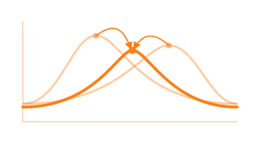
Register and align curves to separate amplitude from phase variability.
Functional observations vary in two ways: amplitude (how tall or deep the features are) and phase (when those features occur). Methods that ignore phase blur the mean and inflate the variance. The Align module estimates a warping function per curve, so that the registered curves \(x_i(h_i(t))\) carry the amplitude and the warps \(h_i\) carry the phase. It covers rigid shifts, affine and landmark warps, smooth Ramsay–Li registration, elastic (Fisher–Rao / SRSF) alignment with several optimisers, shape spaces of curves, likelihood-based registration of non-Gaussian curves, Bayesian alignment and template-free synchronisation.
Not sure where to start? Read Choosing an Alignment Method: it matches the kind of phase variability in your data to a method, and shows on simulated data why the smallest matching warp class wins.
Start here¶
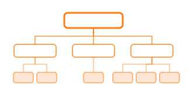
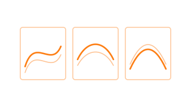
Rigid & parametric warps¶
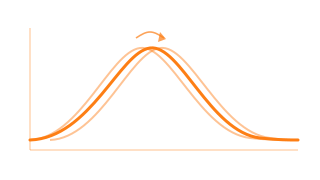
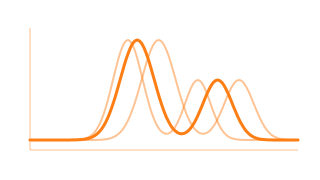
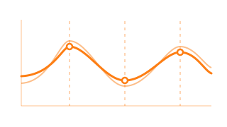
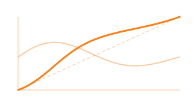
Elastic (Fisher–Rao)¶
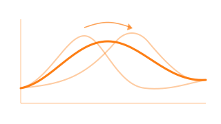
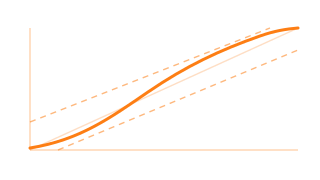
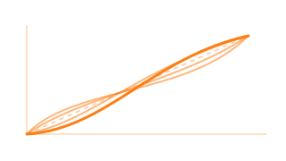
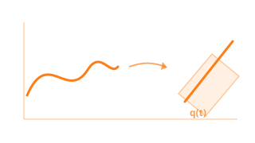
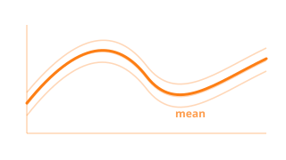
Shapes¶
Special data¶
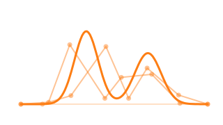
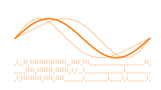
Template-free & probabilistic¶
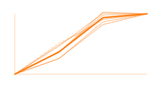
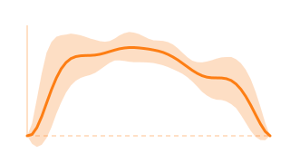
Time series¶
After alignment¶
Scope
- Real-valued curves on one shared grid (
argvals) are supported by every family on these pages. - Irregular or incomplete grids are handled by
register_fpca(curves observed on their own grids, optionally cut off at the start or end) and by the sparse elastic functionssparse_elastic_align_pair/sparse_elastic_mean.elastic_partial_matchmatches a short curve to a sub-interval of a longer one. - Curves in \(\mathbb{R}^d\): the shape-space functions
curve_shape_*quotient out translation, scale, rotation, reparametrisation and (for closed curves) the starting point;karcher_mean_nd_with_configand the other*_nd_with_configfunctions share one warp across coordinates without rotation or scale invariance. - Non-Gaussian values (binary, counts, positive-skewed):
register_fpca(family=...). - Time series of different lengths for search and classification: the DTW family in
fdars.metric(Dynamic Time Warping). - Still unsupported: manifold-valued trajectories other than the shape space (sphere-, SPD- or rotation-valued curves) and density-valued curves. Transform them to an unconstrained space first.